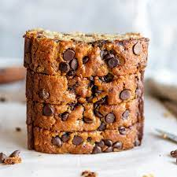

Spoonfulls of Joy
Chocolate Chips

Chocolate chips are small chunks of sweetened chocolate, used as an ingredient in a number of desserts (notably chocolate chip cookies and muffins), in trail mix and less commonly in some breakfast foods such as pancakes. They are often manufactured as teardrop-shaped volumes with flat circular bases.
Ingredients
- 1 cup butter, softened
- 1 cup white sugar
- 1 cup packed brown sugar
- 2 eggs
- 2 teaspoons vanilla extract
- 1 teaspoon baking soda
- 2 teaspoons hot water
- 1/2 teaspoon salt
- 3 cups all-purpose flour
- 2 cups semisweet chocolate chips
- 1 cup chopped walnuts
Curry Chicken

Chicken curry is a globally cherished dish known for its aromatic blend of spices and tender chicken pieces simmered in a flavorful sauce.
Whether prepared in a coconut milk-based Thai curry, a rich and spicy Indian curry, or a comforting Jamaican jerk curry, the dish showcases
the versatility of flavors that can be achieved with this beloved culinary creation.
Ingredients
- 1 tablespoon olive oil
- 1 onion, chopped
- 2 cloves garlic, minced
- 1 tablespoon curry powder
- 1 teaspoon ground cinnamon
- 1 teaspoon paprika
- 1 bay leaf
- 1/2 teaspoon grated fresh ginger root
- 1/2 teaspoon white sugar
- 4 skinless, boneless chicken breast halves
- 1 tablespoon tomato paste
- 1 cup plain yogurt
- 3/4 cup coconut milk
- 1/2 lemon, juiced
- 1/2 teaspoon cayenne pepper
Recipe to Follow
- Heat olive oil in a skillet over medium heat. Saute onion until lightly browned. Stir in garlic, curry powder, cinnamon, paprika, bay leaf, ginger, sugar and salt. Continue stirring for 2 minutes. Add chicken pieces, tomato paste, yogurt, and coconut milk. Bring to a boil, reduce heat, and simmer for 20 to 25 minutes.
- Remove bay leaf, and stir in lemon juice and cayenne pepper. Simmer 5 more minutes.
Chocolate Chip Banana Bread

Ingredients
- 1/2 cup butter, softened
- 1 cup white sugar
- 2 eggs
- 1 cup mashed bananas
- 1 teaspoon baking soda
- 1 tablespoon hot water
- 2 cups all-purpose flour
- 1/2 teaspoon salt
- 1/2 cup sour cream
- 1 teaspoon vanilla extract
- 1 cup semisweet chocolate chips
Recipe to Follow
- Preheat oven to 350 degrees F (175 degrees C). Grease and flour a 9x5 inch loaf pan.
- In a large bowl, cream the butter and sugar. Beat in the eggs, then stir in the bananas. Dissolve baking soda in hot water. Add to the banana mixture. Add flour and salt, stir until smooth. Finally, fold in the sour cream, vanilla and chocolate chips. Pour into prepared loaf pan.
- Bake for 60 to 65 minutes, or until a toothpick inserted into the center of the loaf comes out clean. Let bread cool in pan for 10 minutes, then turn out onto a wire rack.